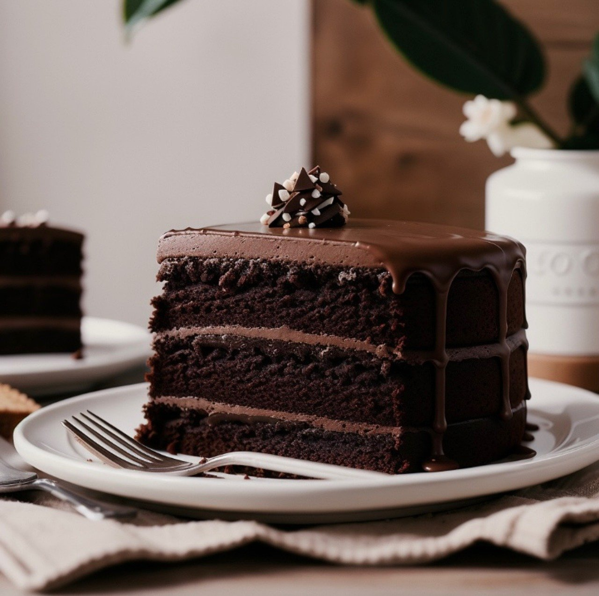

Delicious Chocolate Cake

This chocolate cake is rich, moist, and utterly decadent. Perfect for celebrations or as a sweet treat, this recipe ensures a delightful experience for chocolate lovers everywhere.
Ingredients
- 2 cups all-purpose flour
- 2 cups sugar
- 3/4 cup unsweetened cocoa powder
- 2 tsp baking powder
- 1 1/2 tsp baking soda
- 1 tsp salt
- 1 cup milk
- 1/2 cup vegetable oil
- 2 large eggs
- 2 tsp vanilla extract
- 1 cup boiling water
Step by Step
- Preheat your oven to 350°F (175°C). Grease and flour two 9-inch round baking pans.
- In a large bowl, stir together the flour, sugar, cocoa powder, baking powder, baking soda, and salt.
- Add the milk, vegetable oil, eggs, and vanilla to the dry ingredients. Mix until well combined.
- Carefully stir in the boiling water. The batter will be thin, but this ensures a moist cake.
- Pour the batter evenly into the prepared pans. Bake for 30-35 minutes or until a toothpick inserted into the center comes out clean.
- Remove from the oven and let the cakes cool in the pans for 10 minutes. Then, transfer them to a wire rack to cool completely.
- Frost and decorate as desired. Enjoy your delicious chocolate cake!
Check out other recipes